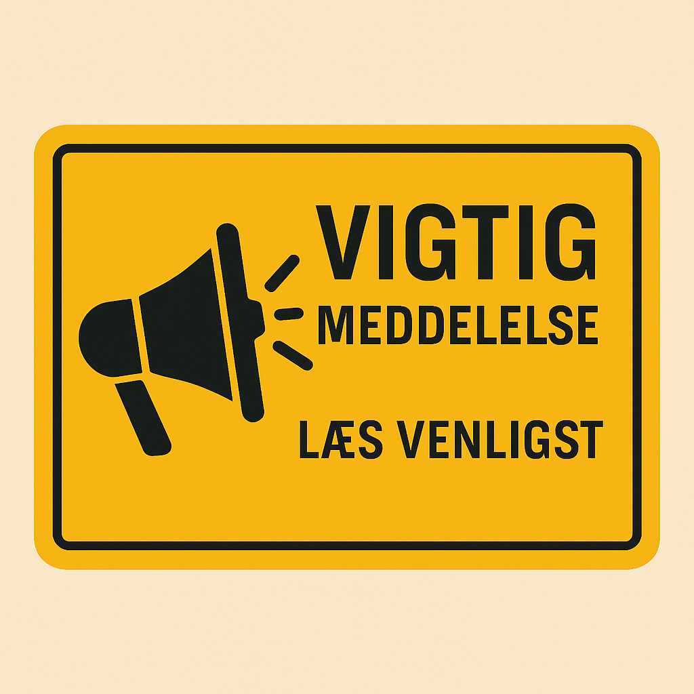

Vigtig meddelelse:
Mærkelige hændelser er blevet registreret i flere danske haver. Vidner fortæller om stærkt lys, svævende objekter og uforklarlige forsvundne grøntsager. Myndighederne opfordrer alle borgere til at være opmærksomme og indberette mistænkelig aktivitet.
Seneste analyse viser et tydeligt mønster: tomater, agurker og salathoveder forsvinder på under 12 sekunder. Selvom undersøgelserne fortsætter, anbefales det at holde afstand til uidentificerede fartøjer og undgå kontakt med ukendte væsener.
Se mere